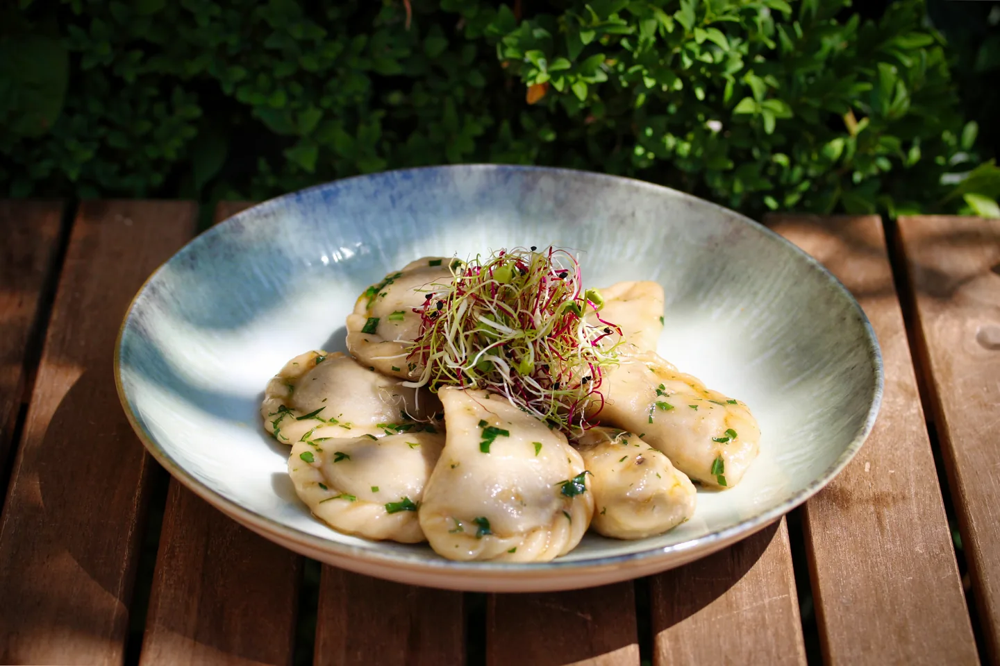

TASTE OF EDEN · ST. GALLEN
Unsere Speisekarte.
Von Pierogi bis Burger – die fotografierte Restaurantkarte neu und lesbar gesetzt.

Entwurf zur Abstimmung: Namen wurden aus den heute fotografierten Karten und vorhandenen Restaurantunterlagen übernommen. Preise, Verfügbarkeit, Zutaten und Allergene sind noch nicht freigegeben. Massgeblich ist bis dahin die aktuelle Karte im Restaurant.
ZUM START
Vorspeisen
- Arancini-Crevetten
- Pierogi Variation
UNSER SCHWERPUNKT
Pierogi
- Twarog & Kartoffelstock
- Suurchabis & gegrillte Waldpilze
- Rindshackfüllung
- Trüffel & Waldpilze
- St. Galler Kälbli Pierogi
HERZHAFT
Burger & Hauptspeisen
- EdenSmash
- EdenCowboy
- EdenRanger
- EdenBrombeerBacon
- Chabiswickel & Kohlroulade
Auf der fotografierten Karte werden Burger mit EdenFries aufgeführt; die genaue Beilage bitte vor Veröffentlichung bestätigen.
DAZU
Sides & Extras
- EdenFries
- EdenFries X-Tra
- EdenJalapeños
- Pierogi-Toppings & Saucen
ZUM ABSCHLUSS
Desserts
- Selbstgebackener Blaubeer-Briochemuffin
- Schoki-Chäsli
- Weitere Desserts nach aktueller Karte
IM GLAS
Getränke
- Haus-Eistee von Dii's Tee: Classic Passion, Hibiskus Münze, Rooibos Ingwer und Alpenchrüter
- Kalte Getränke, Kaffee & Tee
- Bier, offene Weine und Spritz & Apéro
Hungrig geworden?
Aktuelle Auswahl und Preise bitte direkt beim Restaurant prüfen. Für Lieferung und Take-away führt der Link zur Plattform.
Bei Just Eat bestellen ↗